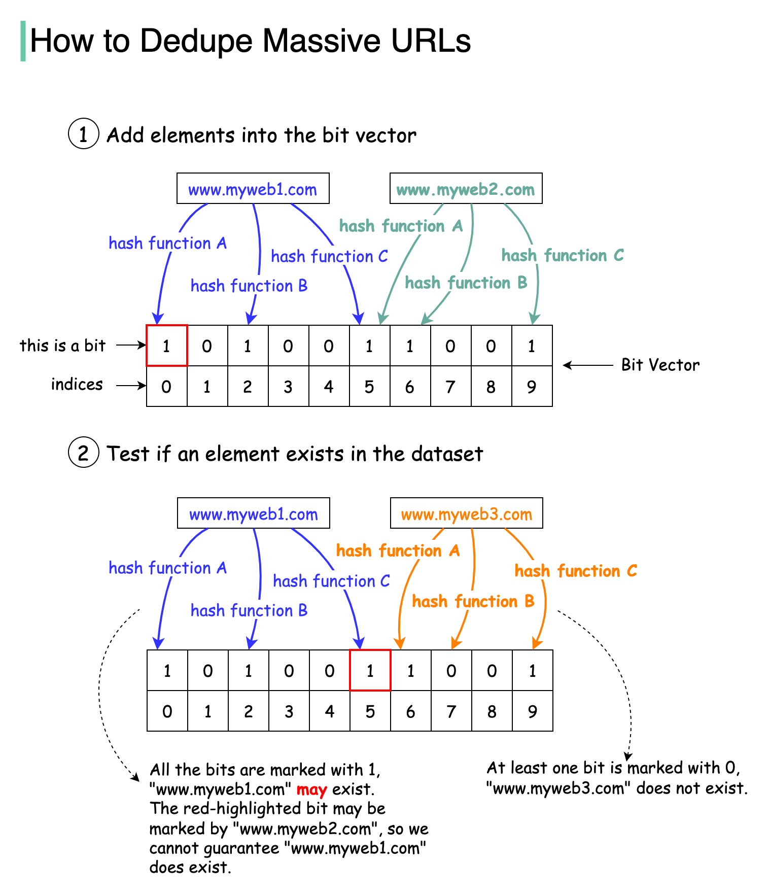

Option 1: Use a Set data structure to check if a URL already exists or not. Set is fast, but it is not space-efficient.
Option 2: Store URLs in a database and check if a new URL is in the database. This can work but the load to the database will be very high.
This option is preferred. Bloom filter was proposed by Burton Howard Bloom in 1970. It is a probabilistic data structure that is used to test whether an element is a member of a set.
False-positive matches are possible, but false negatives are not.
The diagram below illustrates how the Bloom filter works. The basic data structure for the Bloom filter is Bit Vector. Each bit represents a hashed value.
To add an element to the bloom filter, we feed it to 3 different hash functions (A, B, and C) and set the bits at the resulting positions. Note that both “www.myweb1.com” and “www.myweb2.com” mark the same bit with 1 at index 5. False positives are possible because a bit might be set by another element.
When testing the existence of a URL string, the same hash functions A, B, and C are applied to the URL string. If all three bits are 1, then the URL may exist in the dataset; if any of the bits is 0, then the URL definitely does not exist in the dataset.
Hash function choices are important. They must be uniformly distributed and fast. For example, RedisBloom and Apache Spark use murmur, and InfluxDB uses xxhash.